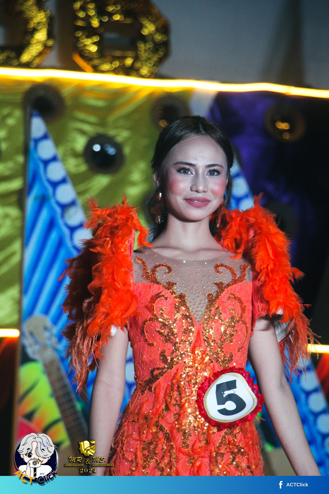
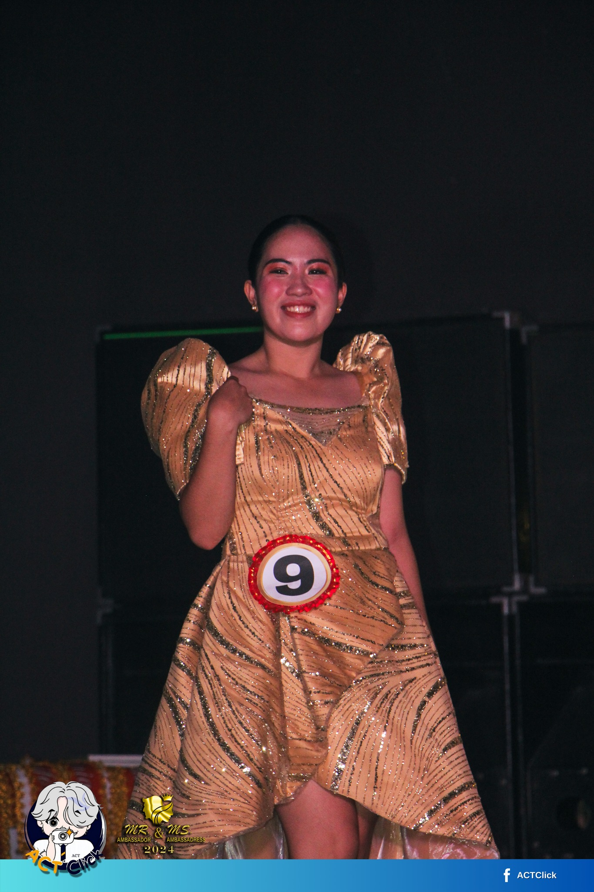
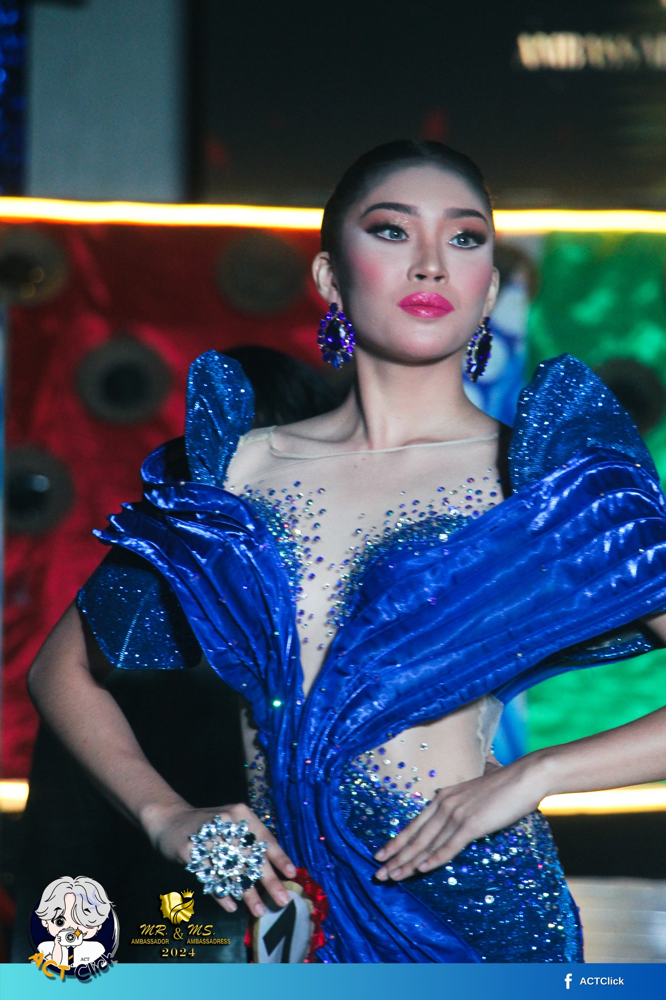
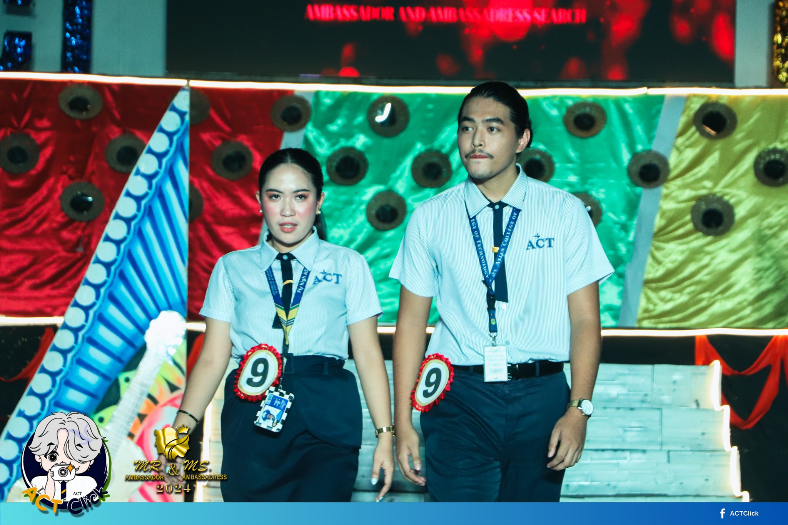
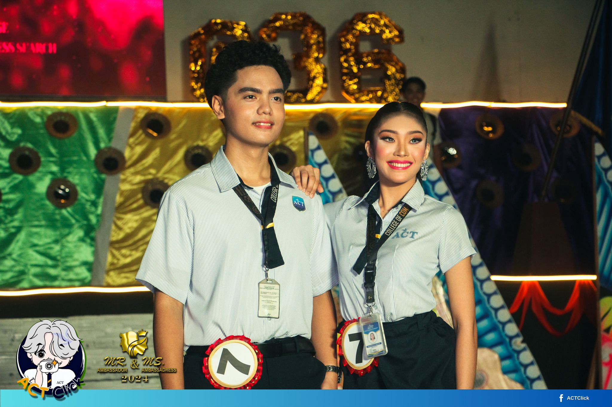
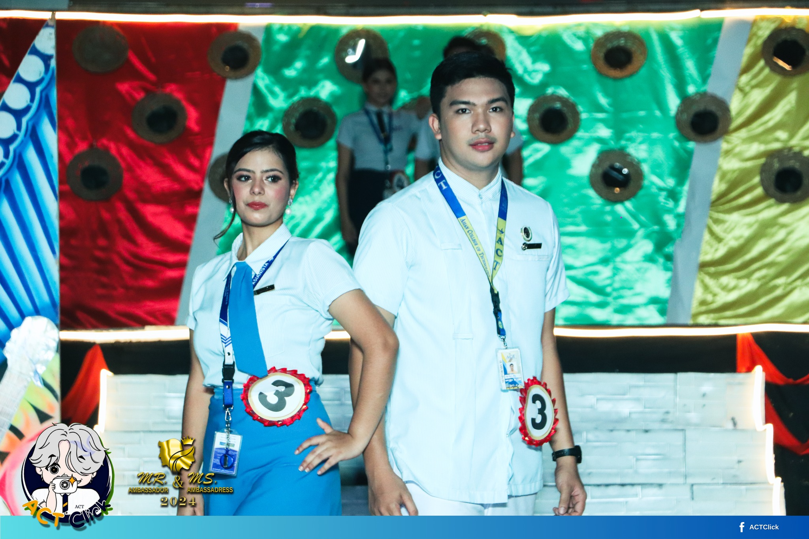
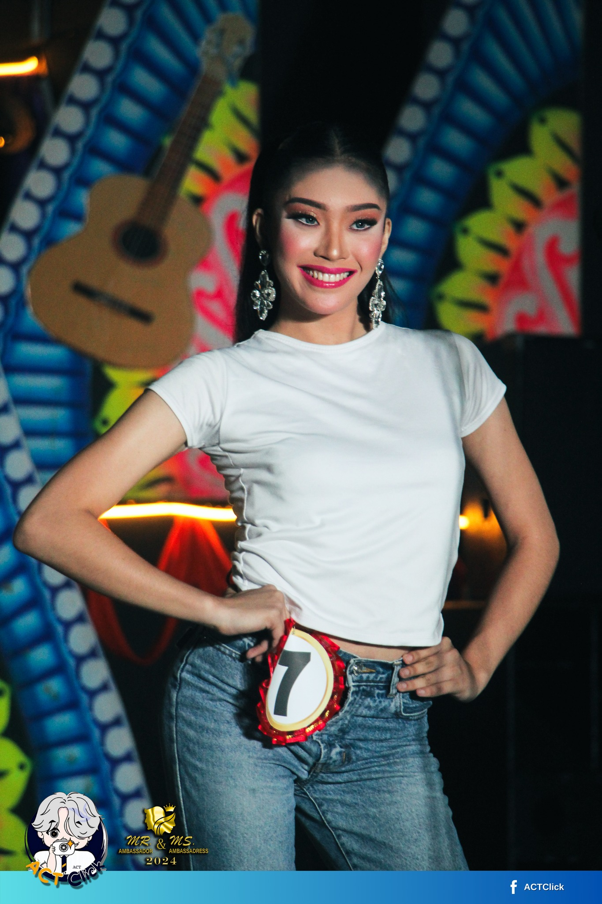
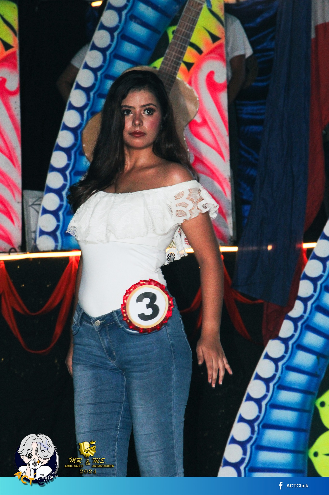

The first picture captures the stunning elegance of the Ms. Ambassadress in her vibrant orange gown during the evening festivities. The gown's flowing design and eye-catching color accentuate her poise and confidence, making her a standout presence at the event. Her radiant smile and graceful demeanor reflect the excitement of the night, embodying the spirit of beauty and charm.

The second picture captures Ms. Ambassadress in a chic khaki-colored gown, showcasing a sophisticated and understated elegance. The gown’s flattering silhouette complements her figure, while her confident stance and warm smile radiate charm and grace. This choice of color adds a unique touch to her overall look, making her stand out beautifully at the event.

In the third picture, Ms. Ambassadress showcases a stunning blue gown, radiating elegance and sophistication at the event. The gown’s intricate details and rich color enhance her graceful presence, making her a true vision of beauty. With poise and charisma, she commands the spotlight, leaving a lasting impression on everyone present

highlights the CCS department's Mr. and Ms. Ambassadress proudly wearing their school uniforms during the event. Their polished appearance and confident smiles reflect their dedication to representing their department with pride. The uniforms symbolize unity and school spirit, showcasing their commitment to excellence and camaraderie within the CCS community.

the CCS department's Mr. and Ms. Ambassadress standing together in their sharp school uniforms, embodying school pride and unity. Their bright smiles and confident demeanor convey a sense of camaraderie as they represent their department with distinction. This moment reflects the spirit of teamwork and dedication, making them standout representatives at the event.

the Nursing department's Mr. and Ms. Ambassadress, radiating confidence and warmth in their professional attire. Their genuine smiles and friendly demeanor reflect their dedication to the healthcare field and the compassion inherent in their roles. This moment captures the essence of teamwork and pride within the Nursing department, making them inspiring representatives at the event.

the girl candidate from the CCS department as she confidently introduces herself during the Mr. and Ms. Ambassadress event. Her poise and grace shine through as she represents her department, embodying the spirit of teamwork and pride. With a warm smile and captivating presence, she captures the attention of the audience, setting the tone for a memorable evening.
from the CCS department stands proudly as he introduces himself, showcasing his confidence and enthusiasm. Dressed in his school attire, he reflects the values of camaraderie and dedication within his department. His engaging personality and charm make a strong impression, highlighting the pride of the CCS community.

Nursing department as she introduces herself with confidence and warmth. Her professional demeanor and genuine smile reflect her dedication to the healthcare field, making her a standout representative. This moment emphasizes the commitment of the Nursing department to excellence and compassion in their roles.